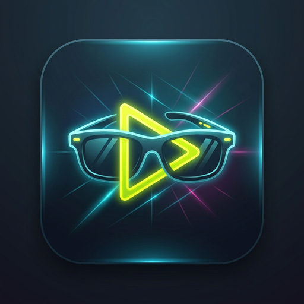
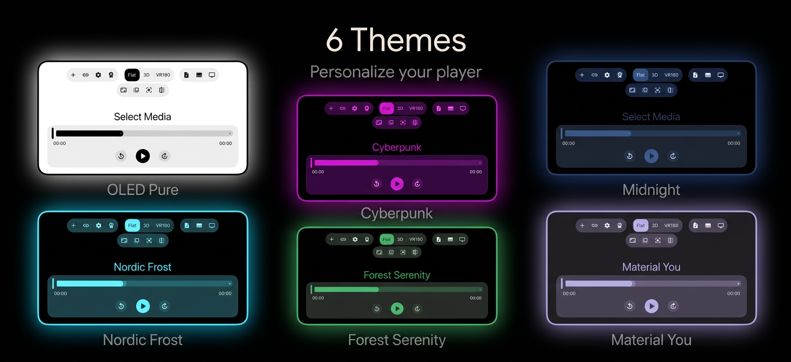

The most advanced media player for AR/XR glasses. Engineered for VITURE and RayNeo with native 3DoF head tracking and spatial audio support.

Every button is optimized for gaze and remote interaction. No more fumbling with standard touch controls in a spatial world.
Switch between 6 premium themes including Midnight, Sharp, and OLED Black. Your eyes, your rules.
